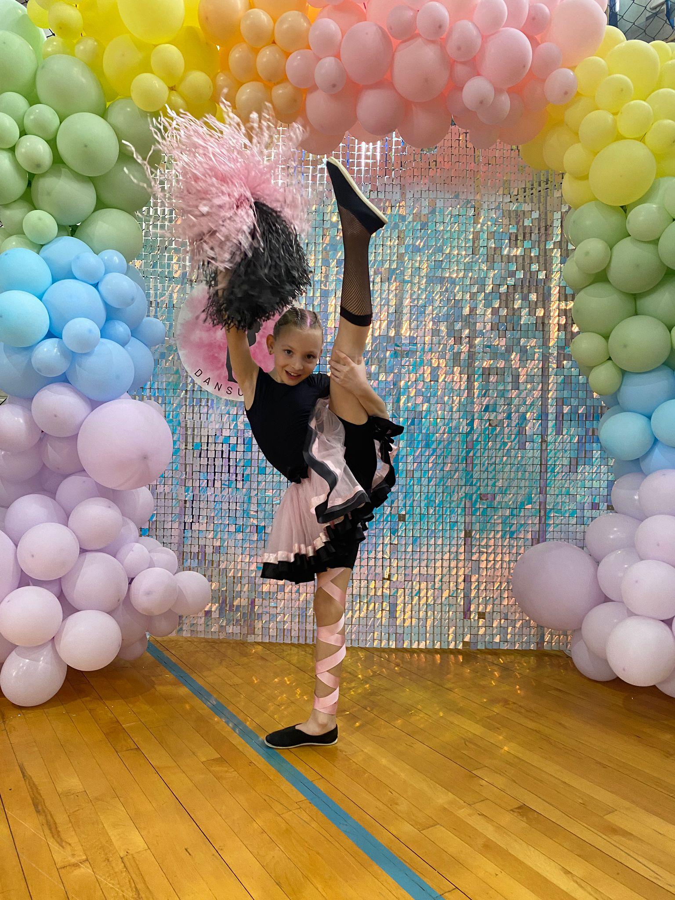
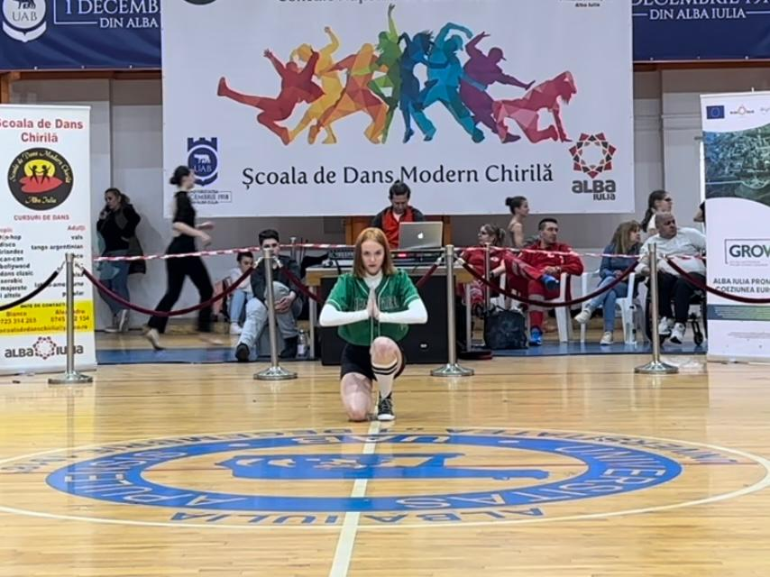
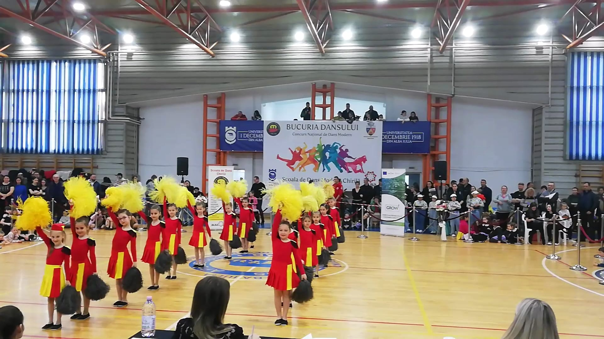
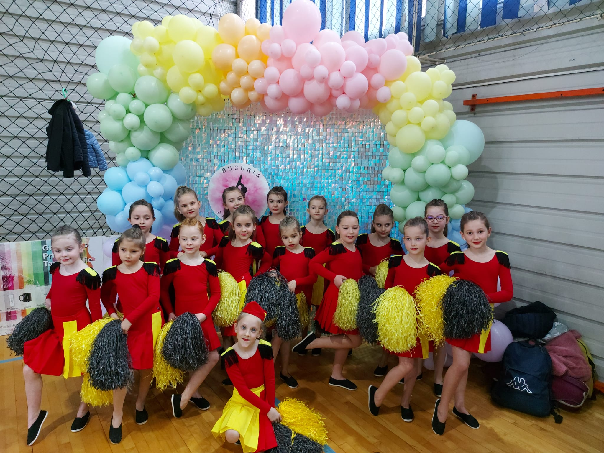
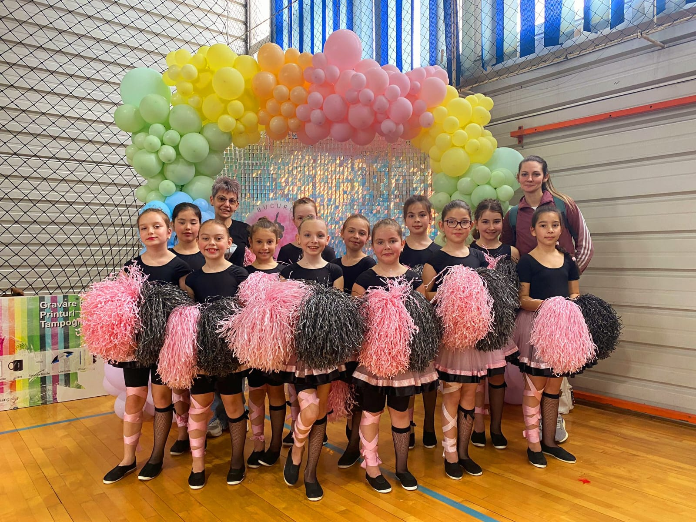
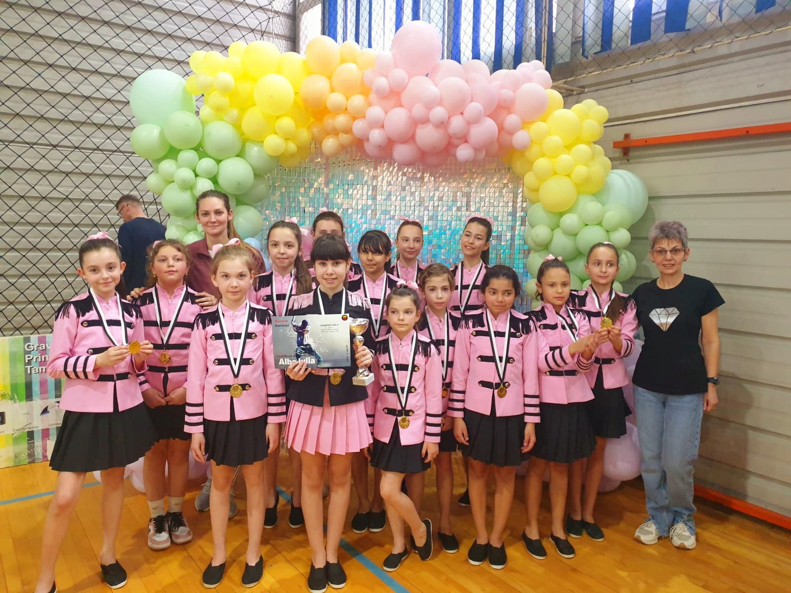
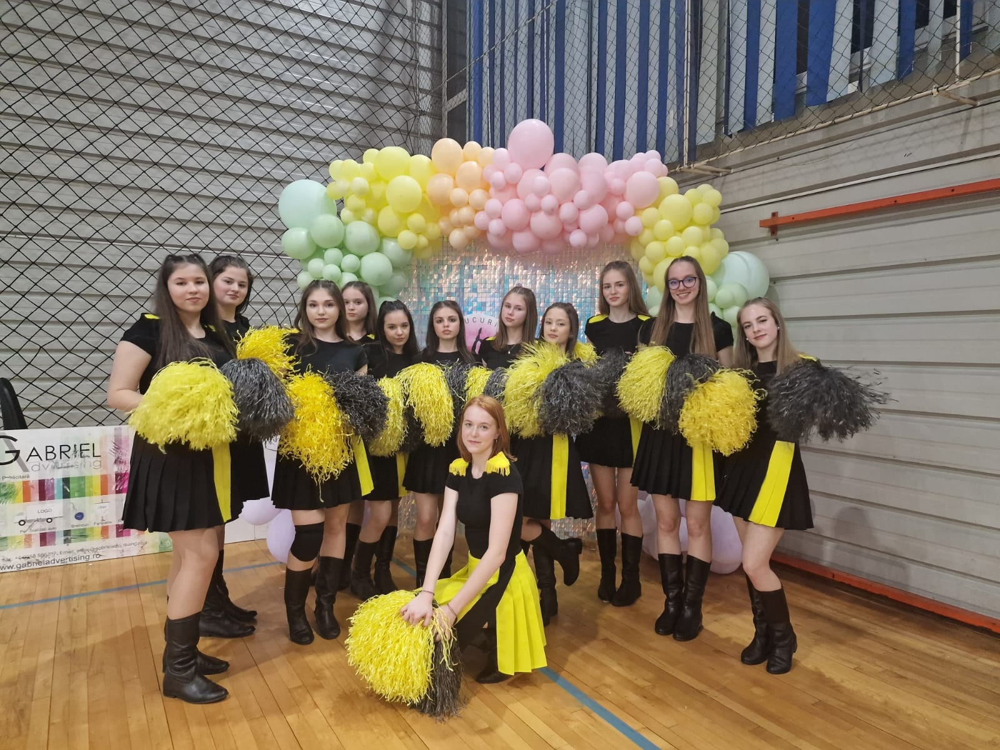

Dans modern/majorete by Ally Alina Clubul Copiilor Câmpia Turzii
Info
-
DISCIPLINA
Disciplina este una dintre cele mai importante atunci când vorbim de educația copiilor. Faptul că practică un sport care presupune un orar bine definit, copilul tău va învăța ce înseamnă punctualitatea și respectarea unui orar. Acest lucru îl va aplica și la școală. Sportul te ajută să te disciplinezi și să îți organizezi timpul astfel încât temele de la școală să fie făcute în timp util pentru a putea merge la antrenamente.
-
SOCIALIZARE
Socializarea micuților este importantă chiar din primii ani de viață. Majoritatea sporturilor sunt de echipă, un lucru foarte important și benefic pentru copii. Cei care nu reușesc să se integreze într-un grup social în perioada copilăriei, tind să fie mult mai introvertiți în perioada adolescenței. Sfătuiește-ți copilul să socializeze și să lege prietenii cu colegii de la antrenamente. Îi va ajuta să se dezvolte din punct de vedere emoțional.
-
Încredere
Încrederea în sine este foarte importantă. Unii adolescenți încep să își piardă încrederea în sine și să se desconsidere în fața colegilor. Sportul este cheia rezolvării acestor probleme. Faptul că o întreagă echipă se bazează pe tine, te face să muncești și să devii suficient de bun astfel încât să obții cele mai bune rezultate. Primești validarea atât din partea colegilor, cât și din rezultatele pe care le obții. Copiii care practică sport au cele mai mici șanse să devină adulți depresivi sau stresați. Beneficiile sunt pe termen lung, adulții care practică sport din copilărie, sunt cei care au încredere în ei și propriile forțe.
-
MISCARE
Sportul este foarte important pentru organismul uman. Orele de educație fizică pe care le au copiii la școală, nu sunt suficiente pentru a asigura organismului o dezvoltare armonioasă și de cele mai multe ori, nu sunt cele mai plăcute și aici intervin problemele: copiii inventează scuze pentru a nu face sport, și ajung să stea toată ora pe bancă. E important să găsești un sport potrivit pentru copilul tău, care să îi dezvolte atât mobilitatea, cât și rezistența fizică.
Ce facem
- 
- 
- 
Echipe
-

Sweet Dolls
Varsta 4-6 ani
-

Dolls
Varsta 8-10 ani
-

Diamont Girls
Varsta 12-15 ani
-

Dream Girls
Varsta 14-18 ani